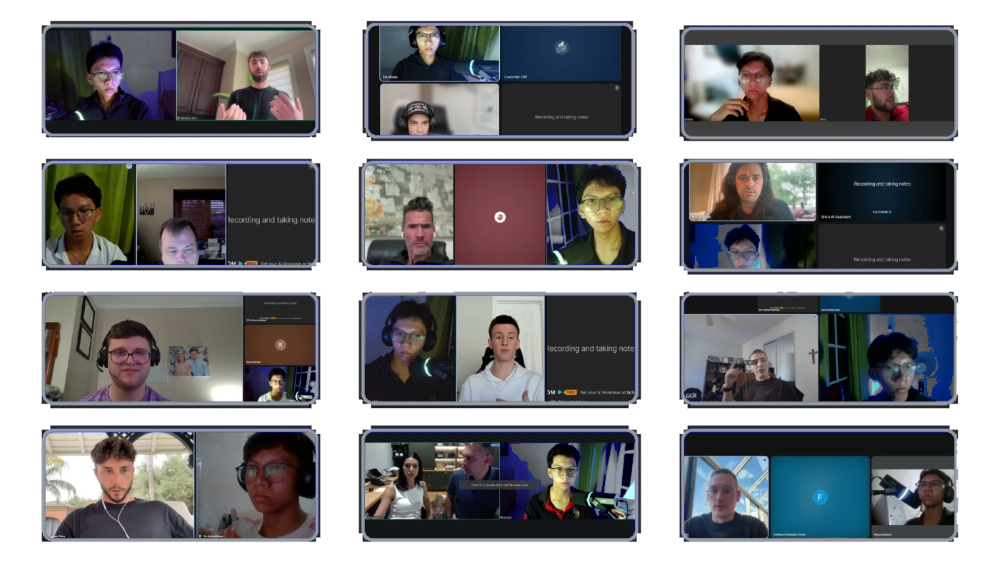
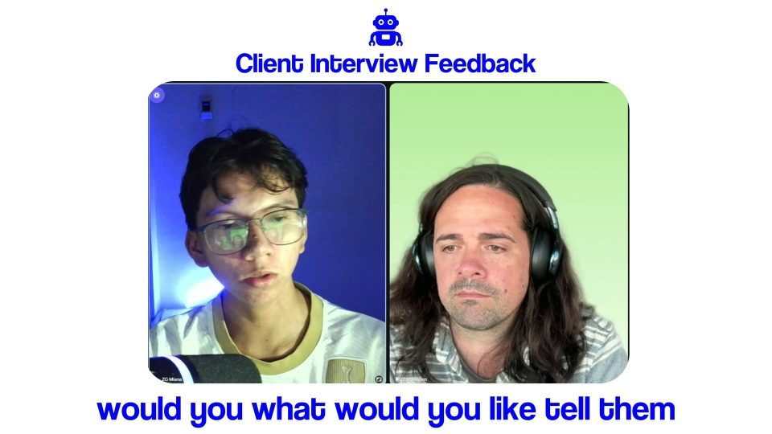
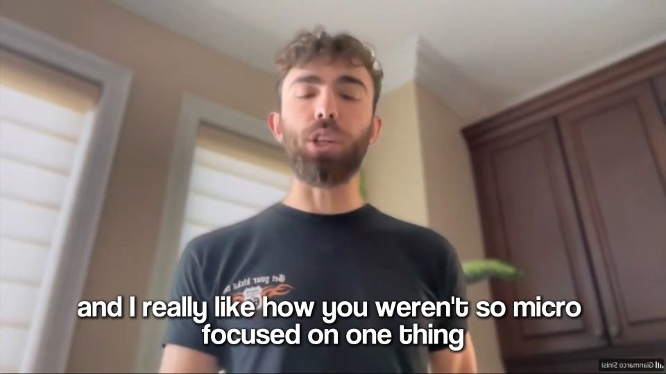

For ceramic coating and detail shops
A complete growth system for detailing businesses: from acquiring new customers to recovering missed opportunities and bringing past customers back.
$10,000 in added revenue in 90 days, or we refund your fee and keep working free until you get there
On the calls
Strategy calls, onboarding sessions and check-ins with the people paying us to fill their calendars. Every face on this wall booked a call the same way you would.

Different trades, same system. It is now pointed at one industry.
Revenue leak calculator
Every missed call is a detail someone else is doing today. Move the sliders to your real numbers.
Your numbers
ASSUMPTIONS, 50% of missed enquiries recovered by a 60-second reply. 8% of your past customer list rebooks in a given month. 40% of finished jobs produce a referral, half of which close. Estimates only. Your close rate and your paint decide the rest.
Walking out the door now
$11,250
25 unanswered enquiries a month at your average ticket
Recovered by instant reply
$5,625
13 jobs that answered a text at 11pm
Reactivated from your old list
$9,000
20 past customers brought back this month
Referrals those jobs create
$2,925
7 jobs from customers who told a friend
Recoverable every month
$17,550
That is $210,600 a year
A note from the founder
Dear detailer,
I spent two years inside marketing agencies. I watched them burn through more than $500,000 of small business budgets in a single year and hand back almost nothing.
Here is what they sold:
They get paid whether your phone rings or not.
So I built the opposite, and I pointed it at one trade.
Detailing. Because detailing has a problem nobody else was fixing: the work happens with your hands in a wheel well. You cannot answer the phone at 2pm on a correction. By the time you call back at 7, the customer booked the guy who answered.
That is not a lead problem. That is a response problem. And it is fixable.
DetailScales builds you a system that:
I know the tricks agencies use, because I watched them up close. That is exactly why this one works differently.
Built by the team behind BotLeads · $145,000 in revenue generated for clients
Zai Miana
Founder, DetailScales
Former agency insider
P.S. If you are running one ad, doing your own follow-up, and wondering why the leads feel cheap, that is the whole problem. Let us look at your numbers together.
Proof
We will not show you detailer numbers we have not earned yet. What we can show you is where this system came from, and the owners who have already run it.


What we did
What results
Where the track record comes from
DetailScales is built by the team behind BotLeads, who have generated $145,000 in revenue for clients running paid acquisition and booking systems for service businesses.
The owners in these interviews are not detailers. They run a med spa, a roofing operation, a contractor services agency and a coaching business. Everything they say is their own words, unscripted.
That is the honest position. The machinery is proven. Pointing it at one trade, with detailing creative and detailing qualification, is the new part. When we have detailer numbers worth showing, they go here.
Owners in other trades, in their own words
“I went from $20K to $35K in 60 days. Zero new staff added.”
“Scaled from 15 to 28 monthly jobs without adding extra workload or extra staff.”
“Helped me manage 10+ clients and generate an additional $6.25K while making operations smoother.”
“Running a 500,000+ follower brand requires solid backend systems. Zai made that easier.”
The mechanism, five parts in order
Nothing here is theory. This is the exact path a job takes once your system is live.
How it actually runs
The referral lands back at the start as a lead you already own, so the loop gets cheaper every time it turns. Ads are the only part that costs new money, which is exactly why they go on last.
Part 1 of 5
Every unclosed quote gets worked, not archived
Example
Quotes sitting in your phone
Why it goes first
Part 2 of 5
Past detail, wash and coating customers brought back by text
Example
Sent to your existing list
Hey Marcus, it has been a while since the RS5 was in. Paint still holding up? We have two coating slots left this month if you want it locked in properly.
Why it works
Part 3 of 5
Automated after every job, with the maintenance work billed instead of forgotten
Example
11 months after a coating
Why it works
Part 4 of 5
An AI voice agent calls every inquiry inside 60 seconds, whatever the source
Example
Inquiry received 11:42 PM
Why it goes here
Part 5 of 5
Paid ads for coating and detailing, added last on purpose
Example
Only switched on once parts 1 to 4 are live
Why it goes last
Close the leaks first, then add traffic on top. Not the other way round.
Run ads into a leaking calendar and you pay twice
The difference
| Typical lead seller | DetailScales | |
|---|---|---|
| What you receive | A name and a number | A qualified job on your calendar |
| Lead quality | Price shoppers and wash enquiries | Filtered for coating and correction budgets |
| Response time | Whenever you get out from under the car | Under 60 seconds, 24/7 |
| Follow-up | Yours to do, if you remember | 14 days, automated, watched by a human |
| Show rate | Whatever it happens to be | Confirmed twice before you load the van |
| Reviews and referrals | Rarely captured | Asked for after every finished car |
| Exclusivity | The same lead sold to three detailers | Your leads are yours |
| Who it is built for | Any trade with a budget | Detailing only |
Most agencies just run ads. We start by getting jobs out of the demand you already have, then add new leads on top of a system that actually follows up.
Getting started
01
We go through your actual numbers. Jobs per month, average ticket, where enquiries currently die. You leave with a clear read on what is possible, whether you hire us or not.
45 minutes
02
Ads, landing page, instant reply, follow-up, calendar, reminders, review and referral requests. Connected, tested end to end with a real test enquiry before a cent of ad spend runs.
Days 1 – 10
03
Traffic goes live and bookings start landing. We watch cost per booked job, kill what is not working, and scale what is. You get a plain English report, not a dashboard you never open.
Ongoing
Investment
There is no single number on this page because there is no single detailer. A one van mobile operator in a small market and a three bay shop competing in a city do not need the same build or the same ad budget.
What we will tell you on the call is exactly what it costs, what it includes, and what it would take to make it pay for itself. If the numbers do not work, we will say so.
What every build includes
Ad spend is paid direct to the platform, never through us. No $5,000 setup fee.
The guarantee
Not a number of leads, not impressions, not a dashboard. Revenue you can count, in a window you can hold us to.
Best case: more than $10,000 in new revenue inside 90 days, and a system that keeps producing after you stop paying us.
Worst case: we fall short, we refund every cent you paid us, and we keep working free until we hit it. You keep every asset either way.
Two routes to the same number, so you can check the maths against your own shop. Six coatings at $1,800 is $10,800. Or three coatings at $1,800 plus twenty five details at $200 is $10,400.
Six coatings in 90 days is two a month.
We will not call this risk free, because it is not. Our fee comes back to you, but your ad budget went to the platform and your time was your own. Neither of those is ours to return, and anyone telling you a marketing engagement carries no risk at all is making a claim they cannot defend.
What we need from you
These are not small print. A revenue guarantee only survives if the inputs are covered, and every one of these is an input you control and we do not.
Questions
Most detailers running ads have a response problem, not a traffic problem. The enquiries come in and sit there for six hours while you are working. Instant reply plus fourteen days of follow-up usually recovers more revenue than doubling the ad budget ever would, and it costs less.
It is written in your voice, using your pricing logic and your service names, and you approve every message before it goes live. It handles the first reply and the qualification. The moment a real conversation starts, it hands over to you. If it ever sounds off, we rewrite it.
That is the point of the qualification stage. Creative is aimed at coating and correction buyers, and the questions surface budget and paint condition before anything reaches your calendar. Wash enquiries get handled and closed out without eating your day.
The build takes seven to fourteen days. Once traffic is live, first enquiries usually arrive within days. How fast they turn into booked jobs depends on your market, your pricing, and your close rate on the phone.
Access to your ad accounts and your calendar, your pricing, and your existing photos and videos. Most detailers already have years of before and afters sitting on their phone. That footage is the best creative you own, and it is free.
No. We do not run two clients against each other in the same service radius. Your leads are yours, and they are not resold.
There is no six month contract holding you in. We will tell you on the strategy call if we do not think your numbers support this yet, and we would rather say that up front than take a build fee and disappoint you.
$10,000 in added revenue inside 90 days. If we miss it, we refund every cent you paid us and keep working free until we hit it. It is a revenue number rather than a lead count because revenue is the thing you actually care about. It comes with conditions, listed openly above, and they exist because we cannot guarantee an outcome while the inputs stay outside our control. We still will not call it risk free. Our fee comes back, but your ad budget went to the platform and your time was your own.
Book your strategy call
Forty five minutes on your numbers. We will show you where the revenue is leaking and exactly what it takes to close the gap. No pitch deck.
The calendar could not load on this connection. Open it in a new tab
Built by the team behind BotLeads · $145,000 in revenue generated for clients